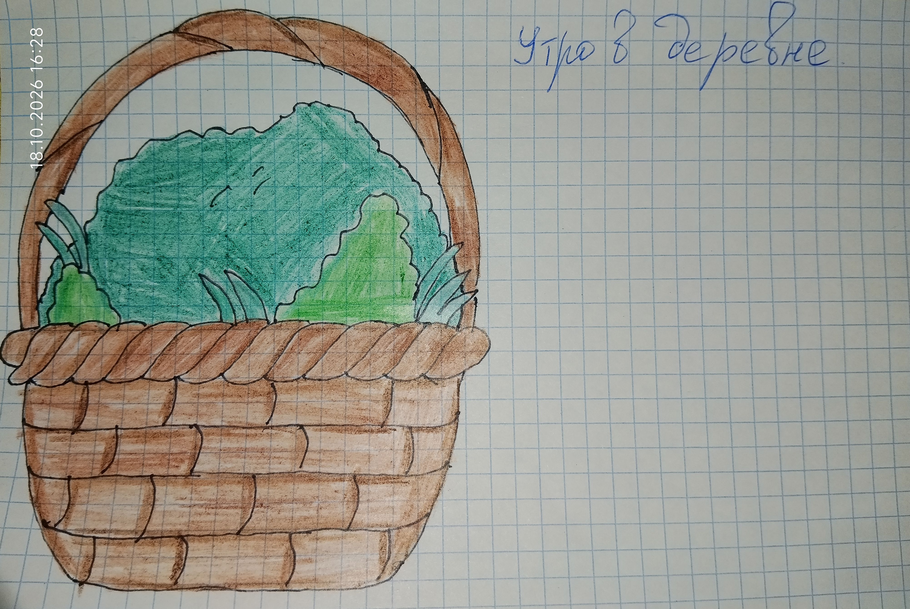

(Рисунок: Корзинка с зеленью)

Утром я вставала рано. Бабушка уже хлопотала на кухне. Я брала корзину и шла рвать крапиву поросятам, траву — кроликам. Крапива жглась, руки краснели, но поросята потом довольно хрюкали — и это было приятно.
Иногда я приучала лошадь к верховой езде. Она была спокойная, но своенравная. Я гладила её по шее, говорила тихо: «Ну, давай, не бойся». И она слушалась.
Когда все дела были сделаны, я бежала на речку. Там я купалась и могла пропадать три-четыре часа. Вода была прохладная, а солнце грело. Я лежала на берегу и смотрела в небо — и не думала ни о чём.
Потом возвращалась домой. Пора было идти за коровой, телёнком и овцами. Я вела их домой, а они шли не спеша, щипали траву по дороге. Петух встречал нас у калитки и снова норовил клюнуть. Я смеялась и убегала.